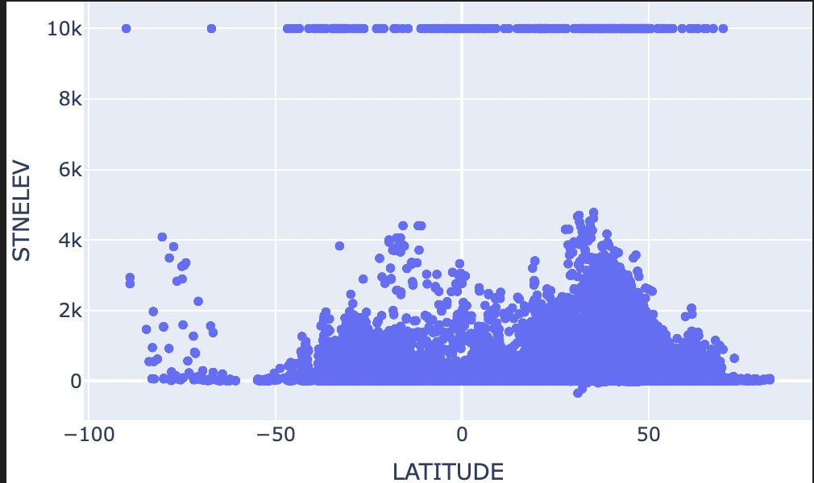
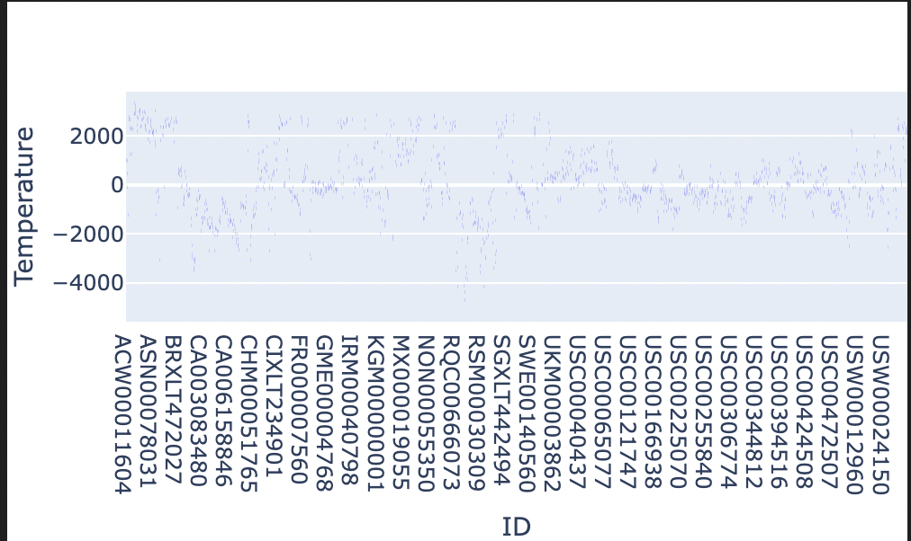

import pandas as pd
# advanced plotting tools for data frames
# basically a bunch of matplotlib shortcuts
import seaborn as sns
from matplotlib import pyplot as plt
import numpy as npSection 1: Database Creation
We are required to create a database with three tables: temperatures, stations, and countries. We need to know how to access country names and relate them to temperature readings. We also need to keep these as three seperate tables in our database.
Lecture Notes: “Databases provide us with a structured way to move subsets of data from storage into memory. Python has a module called sqlite3 (already installed in PIC16B-24W environment) which we can use to create, manipulate, and query databases. There’s also a very handy pandas interface, enabling us to efficiently create pandas data frames containing exactly the data that we want.”
import sqlite3
conn = sqlite3.connect("temps.db")df = pd.read_csv("temps.csv")
df_iter = pd.read_csv("temps.csv", chunksize = 100000)
df.head()| ID | Year | VALUE1 | VALUE2 | VALUE3 | VALUE4 | VALUE5 | VALUE6 | VALUE7 | VALUE8 | VALUE9 | VALUE10 | VALUE11 | VALUE12 | |
|---|---|---|---|---|---|---|---|---|---|---|---|---|---|---|
| 0 | ACW00011604 | 1961 | -89.0 | 236.0 | 472.0 | 773.0 | 1128.0 | 1599.0 | 1570.0 | 1481.0 | 1413.0 | 1174.0 | 510.0 | -39.0 |
| 1 | ACW00011604 | 1962 | 113.0 | 85.0 | -154.0 | 635.0 | 908.0 | 1381.0 | 1510.0 | 1393.0 | 1163.0 | 994.0 | 323.0 | -126.0 |
| 2 | ACW00011604 | 1963 | -713.0 | -553.0 | -99.0 | 541.0 | 1224.0 | 1627.0 | 1620.0 | 1596.0 | 1332.0 | 940.0 | 566.0 | -108.0 |
| 3 | ACW00011604 | 1964 | 62.0 | -85.0 | 55.0 | 738.0 | 1219.0 | 1442.0 | 1506.0 | 1557.0 | 1221.0 | 788.0 | 546.0 | 112.0 |
| 4 | ACW00011604 | 1965 | 44.0 | -105.0 | 38.0 | 590.0 | 987.0 | 1500.0 | 1487.0 | 1477.0 | 1377.0 | 974.0 | 31.0 | -178.0 |
df.shape(1359937, 14)def prepare_df(df):
df = df.set_index(keys=["ID", "Year"])
df = df.stack()
df = df.reset_index()
df = df.rename(columns = {"level_2" : "Month" , 0 : "Temp"})
df["Month"] = df["Month"].str[5:].astype(int)
df["Temp"] = df["Temp"] / 100
return(df)Data Cleaning
df = prepare_df(df)
df.head()| ID | Year | Month | Temp | |
|---|---|---|---|---|
| 0 | ACW00011604 | 1961 | 1 | -0.89 |
| 1 | ACW00011604 | 1961 | 2 | 2.36 |
| 2 | ACW00011604 | 1961 | 3 | 4.72 |
| 3 | ACW00011604 | 1961 | 4 | 7.73 |
| 4 | ACW00011604 | 1961 | 5 | 11.28 |
Adding Temperatures to Our Database
df_iter = pd.read_csv("temps.csv", chunksize = 100000)
for i, df in enumerate(df_iter):
df = prepare_df(df)
df.to_sql("temperatures", conn, if_exists = "replace" if i == 0 else "append", index = False)Adding Stations to Our Database
url = "station-metadata.csv"
stations = pd.read_csv(url)
stations.to_sql("stations", conn, if_exists = "replace", index=False)27585Adding Countries to Our Database
url = "country.csv"
stations = pd.read_csv(url)
stations.to_sql("countries", conn, if_exists = "replace", index=False)279df = pd.read_csv("country.csv")
df = df.rename(columns={'Name': 'Country'})
df.to_csv("country_modified.csv", index=False)Let’s check our Databse:
cursor = conn.cursor()
cursor.execute("SELECT name FROM sqlite_master WHERE type='table'")
print(cursor.fetchall())[('temperatures',), ('stations',), ('countries',)]cursor.execute("SELECT sql FROM sqlite_master WHERE type='table';")
for result in cursor.fetchall():
print(result[0])CREATE TABLE "temperatures" (
"ID" TEXT,
"Year" INTEGER,
"Month" INTEGER,
"Temp" REAL
)
CREATE TABLE "stations" (
"ID" TEXT,
"LATITUDE" REAL,
"LONGITUDE" REAL,
"STNELEV" REAL,
"NAME" TEXT
)
CREATE TABLE "countries" (
"FIPS 10-4" TEXT,
"ISO 3166" TEXT,
"Name" TEXT
)Section 2: Write a Query Function
In this section, we need to first write a climate_database.py file with the function query_climate_database() which accepts five arguments:
1) db_file: the file name for the database
2) country: a string giving the name of a country for which data should be returned
3) year_begin: integer giving the earliest years for which should be returne
4) year_end: integer giving the latest years for which should be returned
5) month: an integer giving the month of the year for which should be returned
The return value of query_climate_database() is a Pandas dataframe of temeperature readings for the specified country, in the specified date range,in the specified month of year. We are required to have these columns: NAME, LATITUDE, LONGITUDE, Country, Year, Month, Temp
from climate_database import query_climate_database
import inspect
print(inspect.getsource(query_climate_database))def query_climate_database(db_file, country, year_begin, year_end, month):
conn = sqlite3.connect(db_file)
query = '''
SELECT S.NAME, S.LATITUDE, S.LONGITUDE, C.Name AS COUNTRY,
T.Year AS Year, T.Month AS Month, T.Temp AS Temp
FROM temperatures T
JOIN stations S ON T.ID=S.ID
JOIN countries C ON S.ID=SUBSTR(C.ID, 1, LENGTH(S.ID)) -- Assuming ID matching logic
WHERE C.Name = ? AND T.Year BETWEEN ? AND ? AND T.Month = ?
''',
(country, year_begin, year_end, month)
df = pd.read_sql_query(query, conn)
conn.close()
return df
query_climate_database(db_file = "temps.db",
country = "India",
year_begin = 1980,
year_end = 2020,
month = 1)| NAME | LATITUDE | LONGITUDE | Name | Year | Month | Temp | |
|---|---|---|---|---|---|---|---|
| 0 | BALDRICK_AWS | -82.767 | -13.05 | Antarctica | 2008 | 4 | -41.08 |
| 1 | BALDRICK_AWS | -82.767 | -13.05 | Antarctica | 2008 | 5 | -48.40 |
| 2 | BALDRICK_AWS | -82.767 | -13.05 | Antarctica | 2008 | 6 | -50.70 |
| 3 | BALDRICK_AWS | -82.767 | -13.05 | Antarctica | 2008 | 7 | -49.14 |
| 4 | BALDRICK_AWS | -82.767 | -13.05 | Antarctica | 2008 | 10 | -43.66 |
| ... | ... | ... | ... | ... | ... | ... | ... |
| 8468 | VIKTORIYA_ISLAND | 80.167 | 36.75 | Svalbard | 1995 | 8 | 0.00 |
| 8469 | VIKTORIYA_ISLAND | 80.167 | 36.75 | Svalbard | 1995 | 9 | -2.09 |
| 8470 | VIKTORIYA_ISLAND | 80.167 | 36.75 | Svalbard | 1995 | 10 | -8.70 |
| 8471 | VIKTORIYA_ISLAND | 80.167 | 36.75 | Svalbard | 1995 | 11 | -20.90 |
| 8472 | VIKTORIYA_ISLAND | 80.167 | 36.75 | Svalbard | 1995 | 12 | -25.40 |
8473 rows × 7 columns
ANOTHER APPROACH
import sqlite3
import pandas as pd
db_file = 'temps.db'
conn = sqlite3.connect(db_file)
cursor = conn.cursor()
cursor.execute('''
CREATE TABLE IF NOT EXISTS countries (
country_id INTEGER PRIMARY KEY,
country_name TEXT NOT NULL
)
''')
cursor.execute('''
CREATE TABLE IF NOT EXISTS stations (
station_id INTEGER PRIMARY KEY,
station_name TEXT NOT NULL,
latitude REAL,
longitude REAL,
country_id INTEGER,
FOREIGN KEY (country_id) REFERENCES countries (country_id)
)
''')
cursor.execute('''
CREATE TABLE IF NOT EXISTS temperatures (
temperature_id INTEGER PRIMARY KEY,
station_id INTEGER,
country_id INTEGER,
year INTEGER,
month INTEGER,
temp REAL,
FOREIGN KEY (station_id) REFERENCES stations (station_id),
FOREIGN KEY (country_id) REFERENCES countries (country_id)
)
''')
conn.commit()
def load_csv_to_table(csv_file, table_name, conn):
df = pd.read_csv(csv_file)
df.to_sql(table_name, conn, if_exists='replace', index=False)
load_csv_to_table('country.csv', 'countries', conn)
load_csv_to_table('station-metadata.csv', 'stations', conn)
load_csv_to_table('temps.csv', 'temperatures', conn)
conn.close()def query_climate_database(db_file, country, year_begin, year_end, month):
conn = sqlite3.connect(db_file)
temp_column = f'VALUE{month}'
query = f'''
SELECT st.NAME, st.LATITUDE, st.LONGITUDE, co.Name AS Country,
te.Year, {month} AS Month, te.{temp_column} AS Temp
FROM temperatures te
INNER JOIN stations st ON te.ID = st.ID
INNER JOIN countries co ON co.`FIPS 10-4` = SUBSTR(te.ID, 1, 2)
WHERE co.`FIPS 10-4` = (SELECT `FIPS 10-4` FROM countries WHERE Name = "{country}")
AND te.Year BETWEEN {year_begin} AND {year_end}
AND te.{temp_column} IS NOT NULL
'''
df = pd.read_sql_query(query, conn)
conn.close()
return dfquery_climate_database(db_file ="temps.db", country ="India", year_begin = 1980, year_end = 2020,month = 1)| NAME | LATITUDE | LONGITUDE | Country | Year | Month | Temp | |
|---|---|---|---|---|---|---|---|
| 0 | PBO_ANANTAPUR | 14.583 | 77.633 | India | 1980 | 1 | 2348.0 |
| 1 | PBO_ANANTAPUR | 14.583 | 77.633 | India | 1981 | 1 | 2457.0 |
| 2 | PBO_ANANTAPUR | 14.583 | 77.633 | India | 1982 | 1 | 2419.0 |
| 3 | PBO_ANANTAPUR | 14.583 | 77.633 | India | 1983 | 1 | 2351.0 |
| 4 | PBO_ANANTAPUR | 14.583 | 77.633 | India | 1984 | 1 | 2481.0 |
| ... | ... | ... | ... | ... | ... | ... | ... |
| 3147 | DARJEELING | 27.050 | 88.270 | India | 1983 | 1 | 510.0 |
| 3148 | DARJEELING | 27.050 | 88.270 | India | 1986 | 1 | 690.0 |
| 3149 | DARJEELING | 27.050 | 88.270 | India | 1994 | 1 | 810.0 |
| 3150 | DARJEELING | 27.050 | 88.270 | India | 1995 | 1 | 560.0 |
| 3151 | DARJEELING | 27.050 | 88.270 | India | 1997 | 1 | 570.0 |
3152 rows × 7 columns
Which works well.
Section 3: Write A Geographic Scatter Function for Yearly Temperature Increases
Consider this question: How does the average yearly change in temperature vary within a given country?
In this section, we are going to write a function called temperature_coefficient_plot() to generate an interactive geographic scatterplot, constructing using Plotly Express with a point for each station.
- Note: Apply () method can be used
df_countries = pd.read_csv('country.csv')
print(df_countries.columns.tolist())
df_countries['FIPS 10-4', 'ISO 3166', 'Name']| FIPS 10-4 | ISO 3166 | Name | |
|---|---|---|---|
| 0 | AF | AF | Afghanistan |
| 1 | AX | - | Akrotiri |
| 2 | AL | AL | Albania |
| 3 | AG | DZ | Algeria |
| 4 | AQ | AS | American Samoa |
| ... | ... | ... | ... |
| 274 | - | - | World |
| 275 | YM | YE | Yemen |
| 276 | - | - | Zaire |
| 277 | ZA | ZM | Zambia |
| 278 | ZI | ZW | Zimbabwe |
279 rows × 3 columns
df_temps = pd.read_csv('temps.csv')
print(df_temps.columns.tolist())
df_temps.head()['ID', 'Year', 'VALUE1', 'VALUE2', 'VALUE3', 'VALUE4', 'VALUE5', 'VALUE6', 'VALUE7', 'VALUE8', 'VALUE9', 'VALUE10', 'VALUE11', 'VALUE12']| ID | Year | VALUE1 | VALUE2 | VALUE3 | VALUE4 | VALUE5 | VALUE6 | VALUE7 | VALUE8 | VALUE9 | VALUE10 | VALUE11 | VALUE12 | |
|---|---|---|---|---|---|---|---|---|---|---|---|---|---|---|
| 0 | ACW00011604 | 1961 | -89.0 | 236.0 | 472.0 | 773.0 | 1128.0 | 1599.0 | 1570.0 | 1481.0 | 1413.0 | 1174.0 | 510.0 | -39.0 |
| 1 | ACW00011604 | 1962 | 113.0 | 85.0 | -154.0 | 635.0 | 908.0 | 1381.0 | 1510.0 | 1393.0 | 1163.0 | 994.0 | 323.0 | -126.0 |
| 2 | ACW00011604 | 1963 | -713.0 | -553.0 | -99.0 | 541.0 | 1224.0 | 1627.0 | 1620.0 | 1596.0 | 1332.0 | 940.0 | 566.0 | -108.0 |
| 3 | ACW00011604 | 1964 | 62.0 | -85.0 | 55.0 | 738.0 | 1219.0 | 1442.0 | 1506.0 | 1557.0 | 1221.0 | 788.0 | 546.0 | 112.0 |
| 4 | ACW00011604 | 1965 | 44.0 | -105.0 | 38.0 | 590.0 | 987.0 | 1500.0 | 1487.0 | 1477.0 | 1377.0 | 974.0 | 31.0 | -178.0 |
df_stationmetadata = pd.read_csv('station-metadata.csv')
print(df_stationmetadata.columns.tolist())
df_stationmetadata['ID', 'LATITUDE', 'LONGITUDE', 'STNELEV', 'NAME']| ID | LATITUDE | LONGITUDE | STNELEV | NAME | |
|---|---|---|---|---|---|
| 0 | ACW00011604 | 57.7667 | 11.8667 | 18.0 | SAVE |
| 1 | AE000041196 | 25.3330 | 55.5170 | 34.0 | SHARJAH_INTER_AIRP |
| 2 | AEM00041184 | 25.6170 | 55.9330 | 31.0 | RAS_AL_KHAIMAH_INTE |
| 3 | AEM00041194 | 25.2550 | 55.3640 | 10.4 | DUBAI_INTL |
| 4 | AEM00041216 | 24.4300 | 54.4700 | 3.0 | ABU_DHABI_BATEEN_AIR |
| ... | ... | ... | ... | ... | ... |
| 27580 | ZI000067983 | -20.2000 | 32.6160 | 1132.0 | CHIPINGE |
| 27581 | ZI000067991 | -22.2170 | 30.0000 | 457.0 | BEITBRIDGE |
| 27582 | ZIXLT371333 | -17.8300 | 31.0200 | 1471.0 | HARARE_BELVEDERE |
| 27583 | ZIXLT443557 | -18.9800 | 32.4500 | 1018.0 | GRAND_REEF |
| 27584 | ZIXLT622116 | -19.4300 | 29.7500 | 1411.0 | GWELO |
27585 rows × 5 columns
import pandas as pd
import sqlite3
import plotly.express as px
from sklearn.linear_model import LinearRegression
import numpy as np
def temperature_coefficient_plot(db_file, country, year_begin, year_end, month, min_obs, **kwargs):
conn = sqlite3.connect(db_file)
country_code_query = f"SELECT `FIPS 10-4` FROM countries WHERE Name = '{country}'"
country_code = pd.read_sql_query(country_code_query, conn).iloc[0, 0]
temp_column = f'VALUE{month}'
query = f'''
SELECT st.NAME, st.LATITUDE, st.LONGITUDE, '{country}' AS Country,
te.Year, {month} AS Month, te.{temp_column} AS Temp
FROM temperatures te
INNER JOIN stations st ON te.ID = st.ID
WHERE SUBSTR(te.ID, 1, 2) = '{country_code}'
AND te.Year BETWEEN {year_begin} AND {year_end}
AND te.{temp_column} IS NOT NULL
'''
df = pd.read_sql_query(query, conn)
conn.close()
df = df.groupby('NAME').filter(lambda x: len(x) >= min_obs)
def calculate_slope(df):
if len(df) < min_obs:
return np.nan
X = df['Year'].values.reshape(-1, 1)
y = df['Temp'].values
reg = LinearRegression().fit(X, y)
return reg.coef_[0]
df['Slope'] = df.groupby('NAME').apply(calculate_slope)
df = df.dropna(subset=['Slope'])
df = df.drop_duplicates(subset=['NAME'])
fig = px.scatter_mapbox(df, lat="LATITUDE", lon="LONGITUDE",
color="Slope",
size=np.abs(df['Slope']),
**kwargs)
if 'color_continuous_scale' not in kwargs:
fig.update_traces(marker=dict(colorscale='RdYlGn'))
fig.update_layout(mapbox_style="carto-positron", mapbox_zoom=2)
fig.update_layout(margin={"r":0,"t":0,"l":0,"b":0})
return fig
color_map = px.colors.diverging.RdGy_r
fig = temperature_coefficient_plot(
db_file="climate_data.db",
country="India",
year_begin=1980,
year_end=2020,
month=1,
min_obs=10,
zoom=3,
mapbox_style="carto-positron",
color_continuous_scale=color_map)
fig.show()Unable to display output for mime type(s): application/vnd.plotly.v1+jsonSection 4: Create Two More Interesting Figures
import plotly
plotly.__version__'5.18.0'Figure 1
Question Address: How does the elevation above sea level vary with latitude across different geographical locations?
import pandas as pd
filename = "station-metadata.csv"
stations = pd.read_csv(filename)
stations= stations.dropna(subset = ["LATITUDE", "STNELEV"])from plotly import express as px
fig = px.scatter(data_frame = stations,
x = "LATITUDE",
y = "STNELEV",
width = 500,
height = 300,
)
#reduce whitespace
fig.update_layout(margin={"r":0, "t":0, "l":0, "b":0})
# show the plot
fig.show()Unable to display output for mime type(s): application/vnd.plotly.v1+json
By plotting latitude against station elevation, researchers can analyze patterns such as:
Are higher elevations found at specific latitudes? Is there a correlation between latitude and elevation, and is it positive or negative? How does the distribution of elevations vary across different latitudes? Are there any outliers that suggest unique geographical features?
Figure 2
Question Address: How do temperature values for January 1961 vary across different IDs (which could represent different locations or stations) in the dataset provided?
import pandas as pd
import plotly.express as px
def plot_temperature_boxplot_january_1961(csv_filename):
df = pd.read_csv(csv_filename)
df_january_1961 = df[df['Year'] == 1961][['ID', 'VALUE1']]
# Rename 'VALUE1' to 'Temperature' for clarity
df_january_1961.rename(columns={'VALUE1': 'Temperature'}, inplace=True)
# Create the boxplot
fig = px.box(data_frame=df_january_1961,
x="ID",
y="Temperature",
width=500,
height=300)
# Reduce whitespace
fig.update_layout(margin={"r":0, "t":50, "l":0, "b":0})
# Show the plot
fig.show()
plot_temperature_boxplot_january_1961('temps.csv')Unable to display output for mime type(s): application/vnd.plotly.v1+json
By constructing a boxplot of January temperatures across different locations, researchers can investigate patterns such as:
What is the typical range of temperatures experienced in various locations during January? Are there any locations with particularly high or low median temperatures compared to others? How does the interquartile range (IQR) of temperatures compare among different locations? Are there any anomalies indicating extreme weather events or microclimates in specific locations?